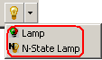

|
|
|
|
|
|
|
|
You can use the Lamp tool to create two types of lamp parts: Lamp and N-State Lamp (multiple states).

For procedures on how to create a normal lamp, see Section 10.3, Example of Creating a Lamp. For procedures on how to create an N-State lamp, see Section 10.4, Example of Creating an N-State Lamp.
The following table describes each tab in the Lamp Settings dialog box and references to more information.
|
Tab Name |
Settings |
Reference |
|
General |
Specify the number of states and the variables of the lamp. |
10.2.1, General Tab |
|
Color |
Specify the colors and the property of the lamp. |
10.2.2, Color Tab |
|
Label |
Specify the text label for each state of the lamp. |
10.2.3, Label Tab |
|
Visibility |
Specify the visibility and blink properties of the lamp. |
10.2.4, Visibility Tab |